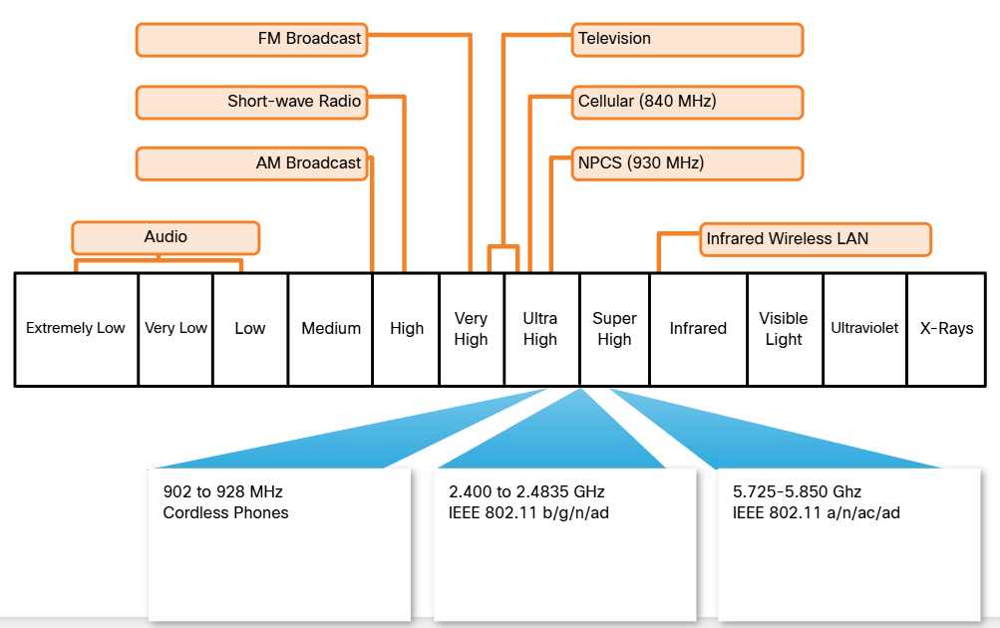

4.2.1 - LAN and Wireless Frequencies
- The wireless technology's most frequent used in home networks are in the on license 2.4 GHZ and 5 GHZ
frequency ranges.
- Bluetooth is a technology that makes use of the 2.4 GHZ band.
- It is limited to low speed, short range communications, but has the advantage of communicating with many
devices at the same time.
- This one to many communication has made Bluetooth technology the preferred method for connecting
computer peripherals such as wireless mice, keyboards and printers.
- Bluetooth is a good method for transmitting audio to speakers or headphones.
- Other technologies that use the 2.4 GHZ and 5 GHZ bands are the modern wireless LAN technologies that
conform to the various IEEE, 802.11 standards.
- Unlike Bluetooth technology, 802.11 devices transmit at a much higher power level. Giving them a great
range and improved throughput.
- Certain areas of the electromagnetic spectrum can be used without a permit.
- These include the 2.4 GHZ and 5 GHZ bands used by Wi-Fi and Bluetooth.

Figure 4.2.1 - Electromagnetic Spectrum